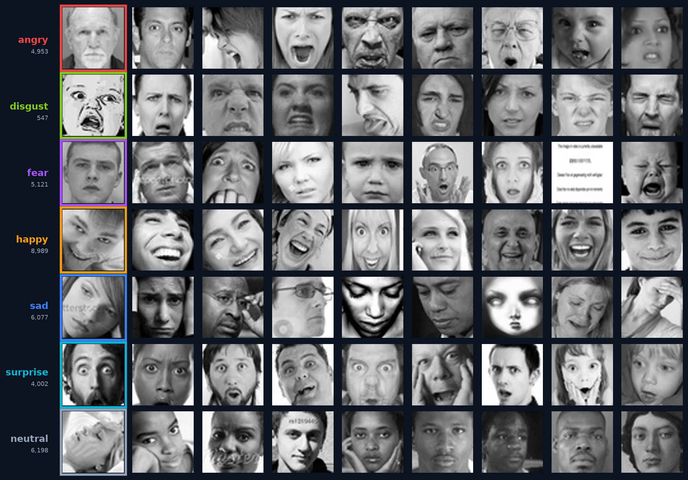
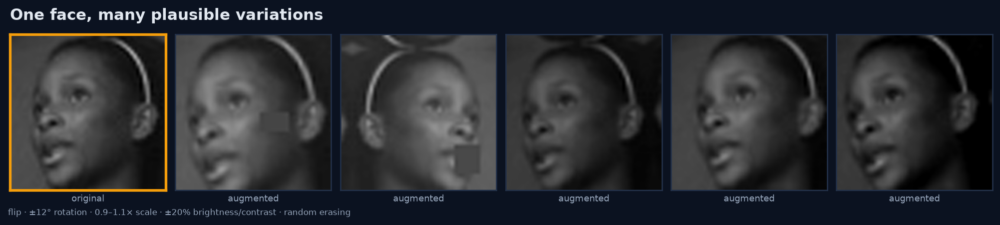
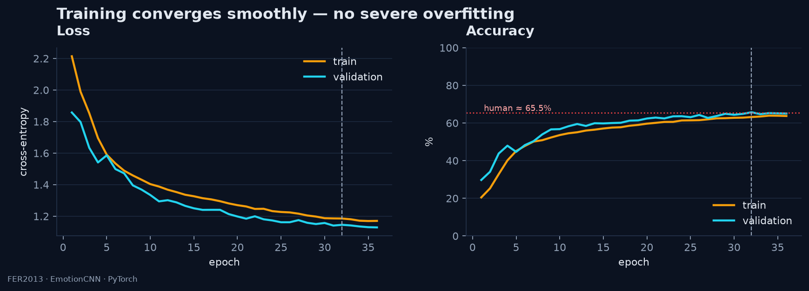
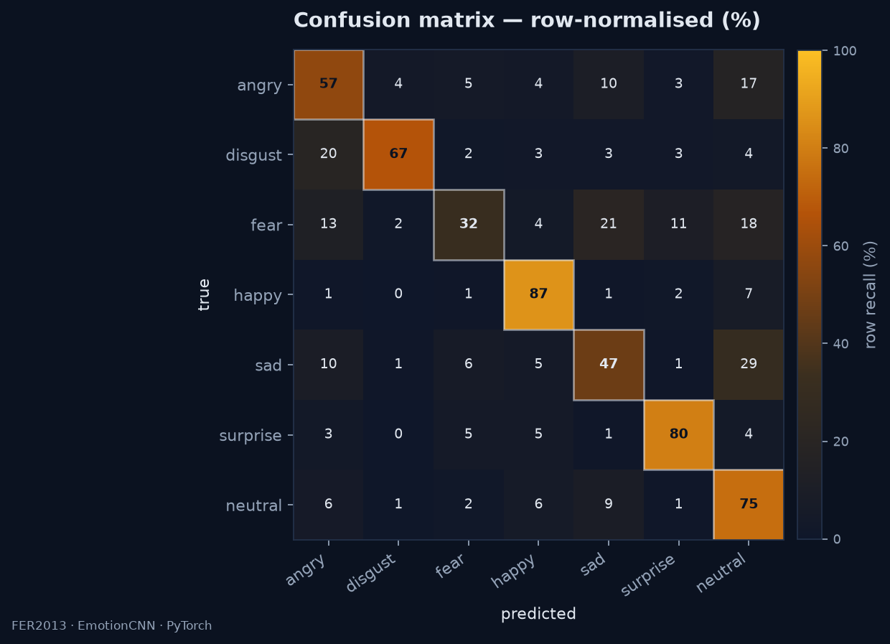
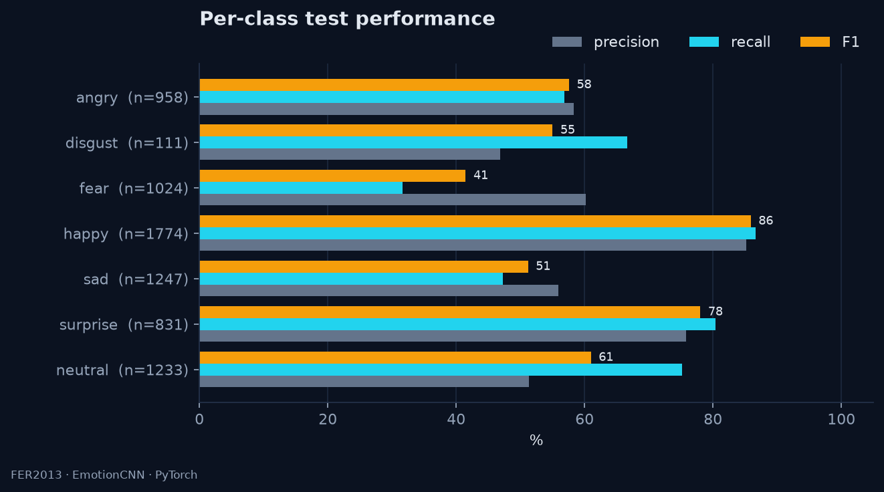
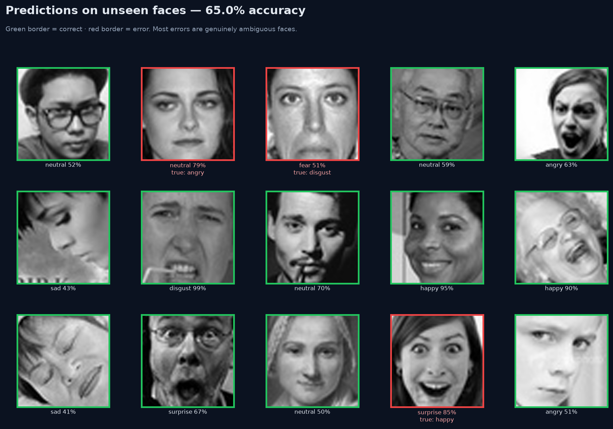
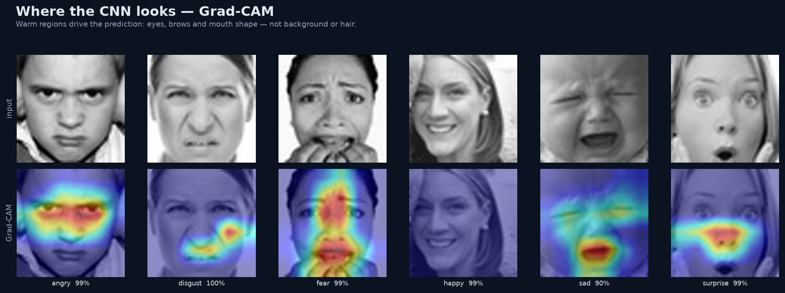
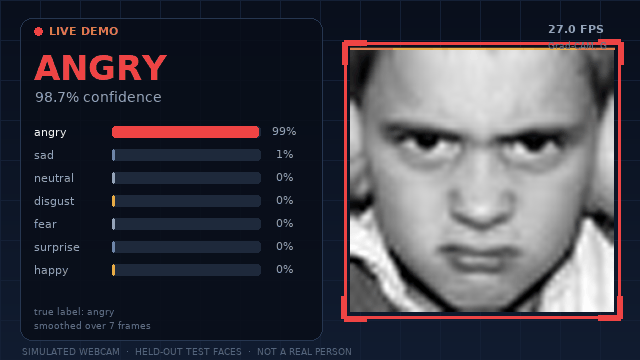

A compact CNN that turns a webcam frame into one of seven expressions — trained from scratch on FER+ and explained with Grad-CAM.
Faces are one of the densest social signals we produce. A camera and a small CNN can classify an expression in milliseconds — with real limits.
Interfaces that notice frustration, confusion or delight without waiting for a click.
Screening aids, affect-aware tutoring and communication tools for people who cannot speak.
Audience reactions, content testing and responsive displays — if consent and bias are handled.
FER+ re-annotates the same 35,887 FER2013 images with ten independent crowd votes per face. We keep the majority label: 35,666 grayscale faces across seven expressions.
10% of train is held out for validation, stratified by class. 221 contempt-majority images are excluded.

“Sad” and “neutral” share a mouth. “Fear” and “surprise” share wide eyes. Human annotators disagree, and so does the model.
48×48 grayscale removes colour, pose, body language and the situation. The model must infer everything from local geometry.
Web-scraped images from 2013, labelled by crowdworkers. Cultural display rules are not represented equally.
“Disgust is rare, visually close to anger, and often mislabelled by humans too.”
Classical face detection finds the crop. Everything after that is one small neural network and a smoothing filter.
Webcam, video file or a folder of images at 640–960 px.
Haar cascade returns the largest frontal face box.
Pad 10%, convert to grayscale and resize to 48×48.
Residual blocks, squeeze-excitation, batch norm, global classifier.
Seven probabilities; top-1 drives the label and confidence.
Average the last seven frames so labels do not flicker.
End-to-end: detect, classify and draw in real time on a laptop CPU.
Three residual stages with squeeze-excitation, one global-pool head. No pretraining, no landmarks, no external data.
Random flips, rotations and erasing turn one face into many. Weight averaging keeps the best version of the model.

Held-out FER+ test split · {{NTEST}} images · {{TTA}} · {{ACC_VS_BENCH}} vs the paper's VGG13.

Best validation epoch: {{BEST_EPOCH}}. Final train–validation gap: {{GEN_GAP}} points.
Rows are true labels. Bright diagonal is good; bright off-diagonal cells are systematic confusions.

A wide mouth and raised cheeks are hard to confuse. Happy recall reaches {{HAPPY_RECALL}}.
{{TOP_CONF_RATE}} of all {{TOP_CONF_TRUE}} faces are predicted as {{TOP_CONF_PRED}}. The mouth shape overlaps and the crops are tiny.
Only 175 training examples and 59 test examples, visually close to anger. Recall is {{DISGUST_RECALL}}.
Precision, recall and F1 for each expression on {{NTEST}} test faces.

Distinct geometry and enough examples. These are the classes a demo should show first.
Rare, subtle, and easily absorbed into anger or sadness. {{MACRO_GAP}} points separate accuracy from macro F1.
A random sample of 15 test images. Green border = correct, red = wrong. Confidence is the model's softmax, not a guarantee.
The model handles clean, frontal faces well. When it fails, the face is often low-contrast, occluded, or genuinely between two labels.

Grad-CAM highlights the pixels that most increase the predicted class score.

Heat sits on brows, eyes and mouth.
Happy lights up the mouth; fear the eyes.
Border heat means a dataset artefact.
OpenCV handles capture and detection; PyTorch runs the CNN. The overlay shows the top-1 label, all seven probabilities and the smoothed confidence.

Simulated from held-out test faces — no real person in this recording. Run the same code on a webcam with --source 0.
Haar cascade picks the largest face; 10% margin keeps the chin and brow in frame.
Average the face and its mirror image before softmax for a small accuracy gain.
Prevents label flicker while still reacting in about a quarter of a second.
Press G for Grad-CAM, B for bars, S for a screenshot, Q to quit.
CNN forward {{LATENCY}} per face · {{FPS}} full loop on this CPU.
A 48×48 classifier is a demo, not a diagnostic. The gap between expression and feeling is where harm happens.
Side profiles, masks, glasses and harsh shadows change the crop. Real webcams are not curated like FER+.
Display rules differ across cultures, ages and contexts. A smile can signal politeness, stress or disagreement.
Web images from 2013, crowd labels, no demographic balance. Performance will not transfer equally.
Emotion data is sensitive. Capture needs informed consent, retention limits and a clear opt-out.
A facial expression is not a feeling.
{{PARAMS_M}} parameters, trained from scratch on CPU, reach {{ACC}} on FER+ — {{ACC_VS_BENCH}} versus the paper's VGG13.
Detection, cropping, TTA and temporal smoothing matter as much as the architecture. Grad-CAM keeps it honest.
{{F1}} macro F1 vs {{ACC}} accuracy shows the imbalance tax. Disgust and fear are where the work remains.
Full code, weights, figures and this deck live in dl-project/.